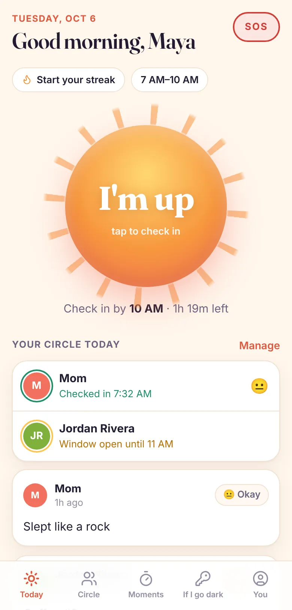
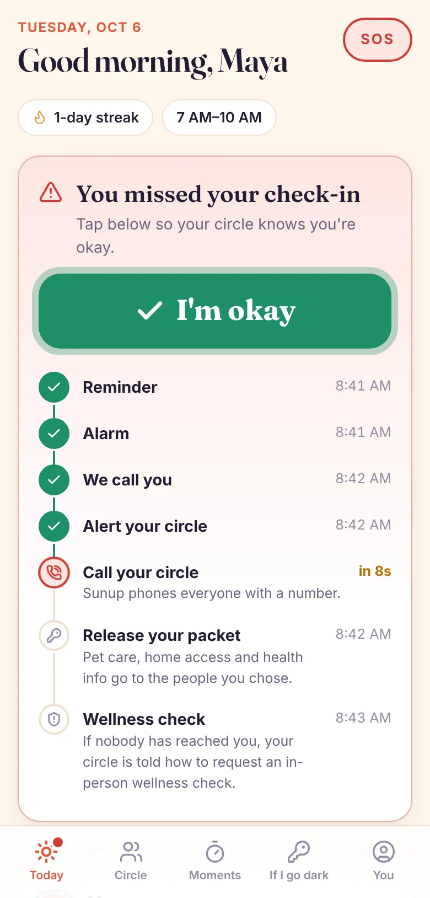
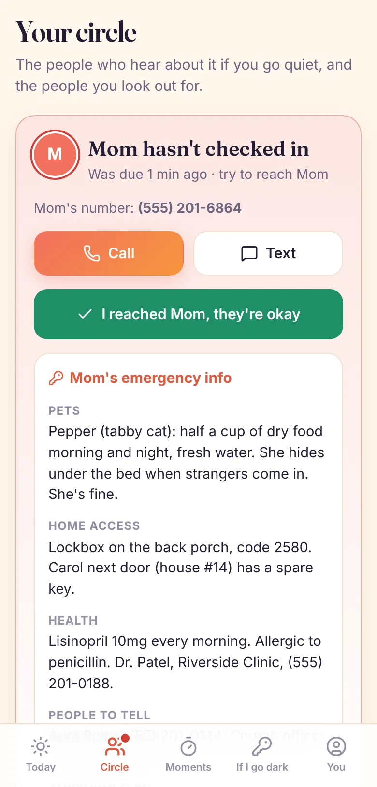

For people who live alone, and everyone who worries about them
If something happened to you today, who would know?
Sunup is a one-tap morning check-in. If you miss it, Sunup checks on you, then tells the people you chose, step by step, until someone reaches you.
Free daily check-in and SOS. Works in your phone's browser. No location tracking.

39.7MUS households are one person living alone, a record 29.5%
15.8Mof those are people 65 or older
Source: U.S. Census Bureau, Current Population Survey, 2025. Living alone is common. Being unnoticed shouldn't be.
How it works
Ten seconds a morning
No tracking, no wearables, no cameras. Just a daily "I'm up" that the people who care about you can count on.
-
Pick your window
Say, 7 to 10 AM. Early bird or late riser, weekdays or every day. Pause it when you're traveling with friends.
-
Tap "I'm up"
One tap and you're checked in. Add a mood, a line or a photo, and your circle gets a little postcard from your morning.
-
Miss it, and we check
A reminder, an alarm, a call to you. If you still don't answer, the people you chose get a text and a call.
If you miss your check-in
From "Still with us?" to someone at your door
Every step is timed from your deadline. Tap "I'm okay" at any point and everything stops, and anyone already alerted hears that you're fine.
- Reminder youA notification: "Still with us?"
- Alarm youAn urgent alert and a text to your phone.
- Phone call youAn automated call asking you to check in.
- Your circle is alerted circleTexts and app alerts with your number, so they can call you.
- Calls, and your emergency info circleSunup calls them, and releases your pet care, door code and meds to the people you chose.
- Wellness check circleIf nobody has reached you, they're told how to get someone to your door.
Timings shown for Premium with a 30-minute grace period. The free plan reminds you, sounds an alarm, then alerts your circle.


For the people who worry
Your kid moved to a new city. Your dad lives alone now.
Sunup gives you a quiet daily signal that they're okay, without tracking where they go. If the signal doesn't come, you'll know within the hour, with what you need to act.
- No app needed for family. Add anyone by phone number. They get a text to confirm, then texts and calls only if you go quiet.
- Watch over each other. Friends and family can share mornings both ways, with a feed of everyone's check-ins.
- "I reached them." One tap tells everyone else to stand down.
Everything in Sunup
Built for the quiet emergencies
A fall in the shower. A bad reaction at 2 AM. A date that goes wrong. The danger is that nobody notices, so Sunup makes sure someone does.
"If I go dark" packet
Who feeds the dog, the door code, your medications. Sealed until an alert gets that far, then only released to the people you picked.
Moments
Safety timers for first dates, runs, nights out and travel. Run out without checking in, and your circle gets the details you saved.
SOS
Hold one button to alert everyone at once, with your location if you choose. Free on every plan.
Fake call
A realistic incoming call when you need a polite reason to leave.
Away mode
Staying with family or traveling with friends? Pause check-ins for a few days. SOS keeps working.
No location tracking
Sunup never follows you around. Your location is only shared if you send an SOS and say so.
Pricing
Free to start. Less than a coffee a week for the full net.
Free
$0
- Daily check-in with postcards
- Reminder, alarm, then your circle is alerted
- Up to 2 people in your circle
- SOS and away mode
Premium
$9.99 / month, or $79.99 / year
- Phone calls to you, then to your circle
- "If I go dark" packet released during an alert
- Moments and fake call
- Unlimited circle, up to 3 check-ins a day
- Smart check-in when you open the app
Questions
Is Sunup an emergency service?
No. Sunup makes sure the people you trust find out when you've gone quiet. If you're in danger, call 911.
Do the people in my circle need the app?
No. Add anyone by phone number. They'll get one text asking them to reply YES, and after that they only hear from Sunup if you miss a check-in. With the app, they also see your daily postcards.
What if I just forget to check in?
You'll get a reminder and an alarm before anyone else is told, and you choose how long the grace period is (15, 30 or 60 minutes). If your circle was alerted, tapping "I'm okay" tells them right away.
Does Sunup track my location?
No. The only time your location is shared is when you send an SOS and leave "Include my location" on.
Who can see my "If I go dark" packet?
Nobody, until a missed check-in reaches the release step. Then only the people you marked can see it, and it seals again once you're okay.
Can I cancel Premium?
Any time, from the app. The daily check-in and SOS stay free forever.